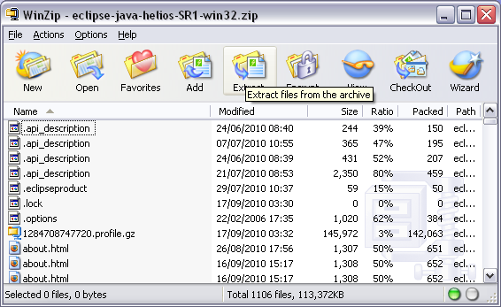

The Eclipse Platform is an open source framework. It is designed for building integrated development environments.
Mobile Widgets SDK provides an editor based on the Eclipse platform.
Note:
Mobile Widgets SDK requires Eclipse 3.5 or higher.
Go to Eclipse Downloads page ( http://www.eclipse.org/downloads/ ).
" Eclipse Downloads " page is opened.
Select " Eclipse IDE for Java EE Developers " link.

" File download " dialog box is opened.
Select " Save " button.
" Save As " dialog box is opened.
Choose " Desktop " without changing the name " eclipse-java-helios-SR1-win32.zip " in the textfield " File name: ".
Select " Save " button.
" Download complete " dialog box is opened.
Select " Open " button.

" WinZip - eclipse-java-helios-SR1-win32.zip " dialog box is opened.
Select " Extract " button.

" Extract - (patch where the zip file is copied) " dialog box is opened.
Choose a place on your hard drive to extract the "zip" file in the textfield " Extract to: ".
Warning:
The folder tree where Eclipse is installed must not contain white spaces.
Mobile Widgets SDK does not support space in folder name.
A folder " eclipse " is created in the place choosen on your drive.
Open " eclipse " folder.
All files used by " eclipse " are installed in this folder.
Open eclipse folder and launch " eclipse.exe " file to open Eclipse.
" Workspace Launcher " dialog box is opened.
Choose a Workspace by " Browse... " button or enter directly the path.
Enter " OK " button.
Note:
If you don't know what it is: see proxy definition.
If you don't use a proxy, go to the next part (Mobile Wingets SDK installation).
From eclipse folder, launch " eclipse.exe " file to open Eclipse.
" <Mobile Widget> - Eclipse " is opened.
In options, select Window then Preferences to access to Preferences window.
" Preferences " dialog box is opened.
Open " General " folder and select " Network connections " to access to Network Connections.
Select " Native " for " Active Provider ".
Only " HTTP Dynamic " is checked in " Proxy entries ".
Any " Host " is checked in " Proxy bypass ".
Select " OK " button to save preferences and close Preferences window.
" Preferences " dialog box is opened.
Open " General " folder and select " Network connections " to access to Network Connections.
Select " Manual " for " Active Provider ".
" HTTP ", " HTTPS " and " SOCKS " are checked in " Proxy entries ".
" localhost " and " 127.0.0.1 " are checked in " Proxy bypass ".
Select " OK " button to save preferences and close Preferences window.
Warning:
Complete HTTP and HTTPS configuration lines ( SOCK is not required).